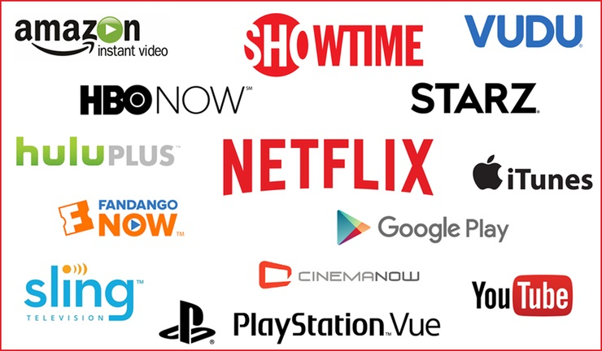

스트리밍 서비스
인터넷상에서 음성 · 영상 콘텐츠를 실시간으로 재생하는 방식을 말한다. 전체 파일을 저장 공간에 내려받는 다운로드 방식과 대비된다. 별도 저장 공간이 필요 없기 때문에 하드디스크 용량에 관계없이 콘텐츠를 자유롭게 재생할 수 있다. 동영상 전문 웹사이트인 유튜브(U-tube)를 생각하면 이해가 쉽다. 1~2초 분량으로 조각난 짧은 콘텐츠 분량을 실시간으로 계속 내려 받기 때문에 빠른 속도의 인터넷 속도가 필수적이다. 하지만 와이파이 보급 확대로 무선인터넷 서비스 품질이 높아지며 무선으로 스트리밍 서비스를 이용하는 환경이 구축되고 있다.
